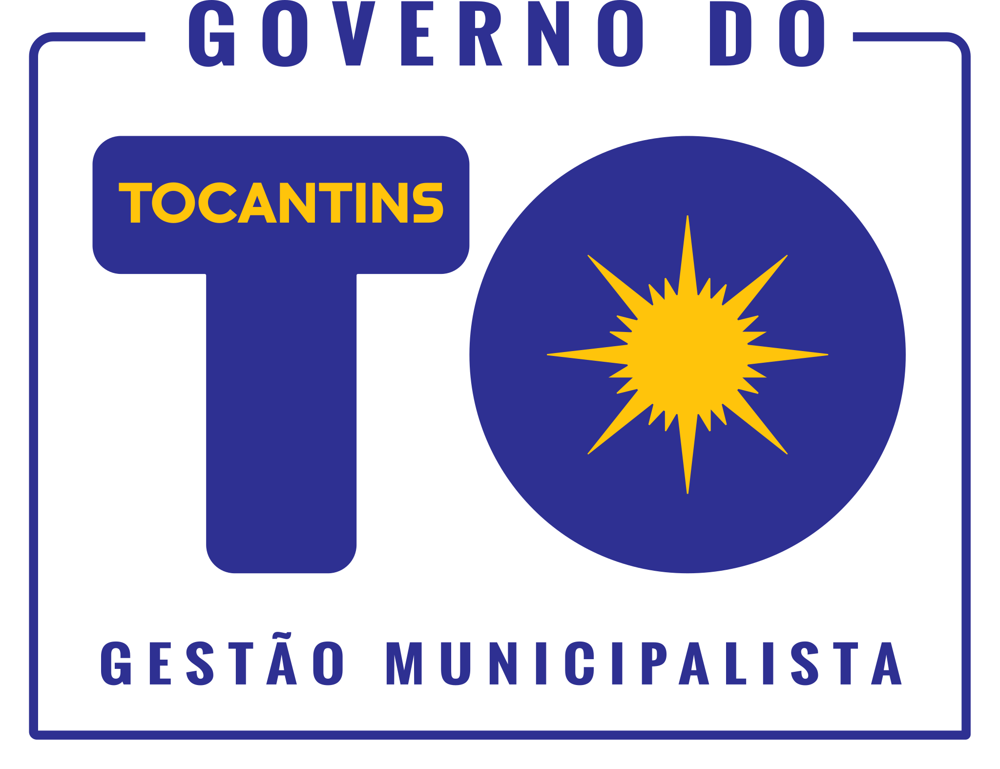

<html lang="pt-BR" class="to-gov-barra">
<head>
	<link href="https://fonts.googleapis.com/css?family=Roboto:400&amp;display=swap" rel="stylesheet">
	<!-- <link href="https://fonts.googleapis.com/icon?family=Material+Icons|Material+Icons+Outlined" rel="stylesheet"> -->
	<meta name="viewport" content="width=device-width, initial-scale=1">
	<meta charset="utf-8">
	<link rel="stylesheet" href="govto-font.css">
	<link rel="stylesheet" href="rodape.css">
</head>
<body>
	<footer class="rodape_togov">
		<div class="links_footer">
			<ul>
				<li><a href="#"><i class="material-icons">phone_in_talk</i>Ouvidoria</a></li>
				<li><a href="#"><i class="material-icons">contact_support</i>Serviço de Informação ao Cidadão</a></li>
				<li><a href="#"><i class="material-icons">search</i>Portal da Transparência</a></li>
				<li><a href="#"><i class="material-icons">sms_failed</i>Acesso à Informação</a></li>
				
			</ul>
		</div>
		<div class="logo_footer">
			<div class="content">
				
				<!-- <address>Praça dos Girassóis, s/n <br>Palmas - Tocantins</address> -->
				<div class="desenvolvido-por">
					<span>Desenvolvido por:</span>
					
				</div>
			</div>
		</div>
	</footer>
</body>
</html>